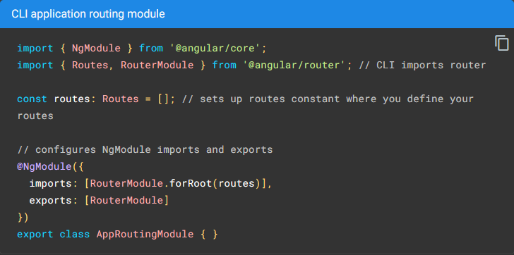
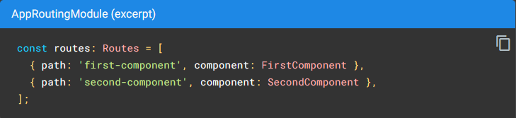
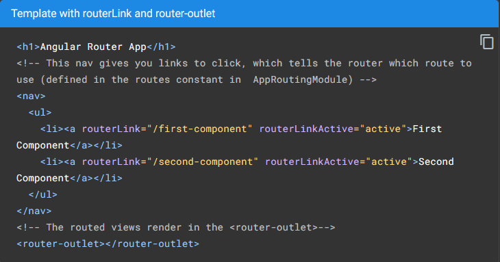

<main class="routes-main py-4">
    <div class="routes-container">
        <h2>Routing</h2>
        <hr style="border-color: rgb(117, 117, 117);">
        <p>
            O Angular Router NgModule fornece um serviço que permite definir um caminho de navegação entre os diferentes estados do aplicativo e visualizar hierarquias em seu aplicativo. É modelado nas convenções familiares de navegação do navegador:
        </p>
        <ul>
            <li>Insira um URL na barra de endereço e o navegador navegará para uma página correspondente.</li>
            <li>Clique nos links na página e o navegador navegará para uma nova página.</li>
            <li>Clique nos botões voltar e avançar do navegador para navegar para frente e para trás no histórico das páginas que você viu.</li>
        </ul>
        <h2 class="mt-5">Gerando uma aplicação com roteamento habilitado</h2>
        <hr style="border-color: rgb(117, 117, 117);">
        <p>
            O comando a seguir usa o Angular CLI para gerar um aplicativo Angular básico com um módulo de roteamento de aplicação, chamado AppRoutingModule, que é um NgModule onde você pode configurar suas rotas. O nome da aplicação no exemplo a seguir é routing-app.
        </p>
        <p>
            <code>ng new routing-app --routing --defaults</code>
        </p>
        <ol>
            <li>
                Importe o RouterModule e Routes no seu módulo de rotas. <br>
                O Angular CLI faz isso automaticamente e até configura um array para as suas rotas e configura os imports e exports do @NgModule().
                
            </li>
            <li class="mt-3">
                Defina suas rotas no array de Routes. <br>
                Cada rota neste array é um objeto JavaScript que contém duas propriedades. A primeira propriedade, path, define o caminho da URL para a rota. A segunda propriedade, componente, define o componente que o Angular deve usar para o caminho correspondente.
                 
            </li>
            <li class="mt-3">
                Adicione suas rotas a sua aplicação. <br>
                Agora que você definiu suas rotas, adicione-as a sua aplicação. Primeiro, adicione links aos dois componentes. Atribua a tag de âncora à qual deseja adicionar a rota ao atributo routerLink. Defina o valor do atributo para o componente para mostrar quando um usuário clica em cada link. Em seguida, atualize seu modelo de componente para incluir <code>&lt;router-outlet&gt;</code>. Este elemento informa ao Angular para atualizar a visualização do aplicativo com o componente para a rota selecionada.
                
            </li>
        </ol>
    </div>
</main>
